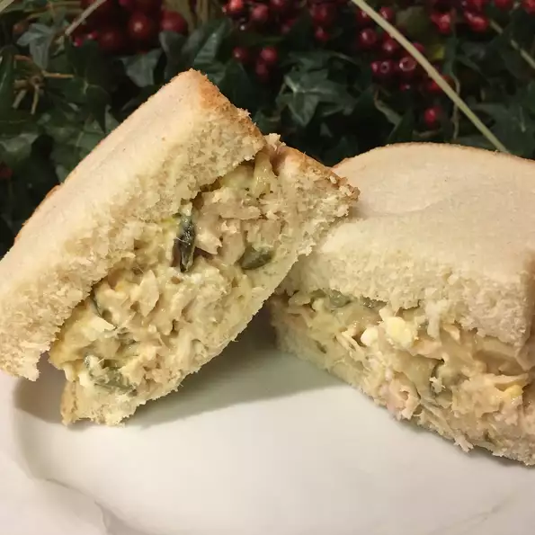

Tuna Salad

Virgina's tuna salad was always a summer Saturday favorite for my grandparents and me. Great served on a large lettuce leaf. You may also add grapes or chopped apples if you wish.
Ingredients
- egg
- can tuna
- mayonnaise
- stalk celery
Steps
- Place egg in a saucepan and cover with cold water
- Mix together tuna and mayonnaise in a medium bowl.
- Remove egg from hot water; cool for 5 minutes